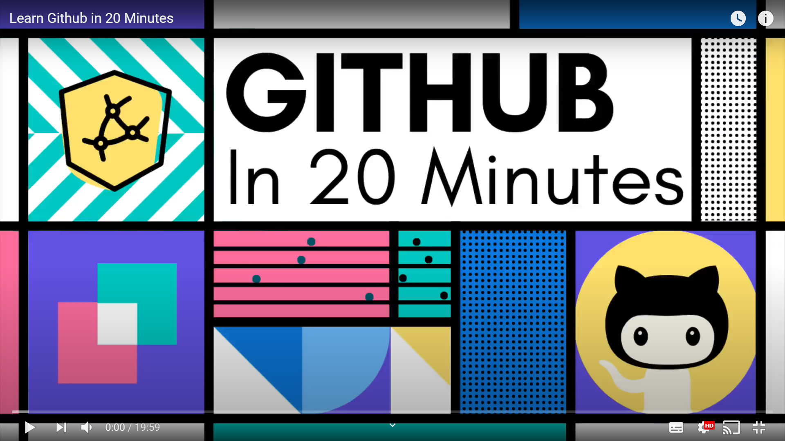
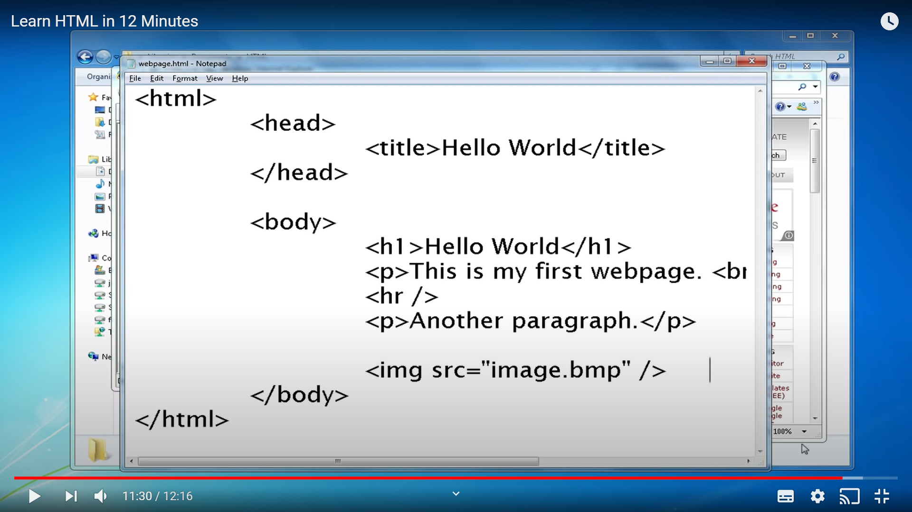
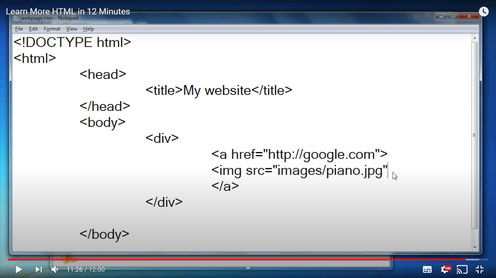
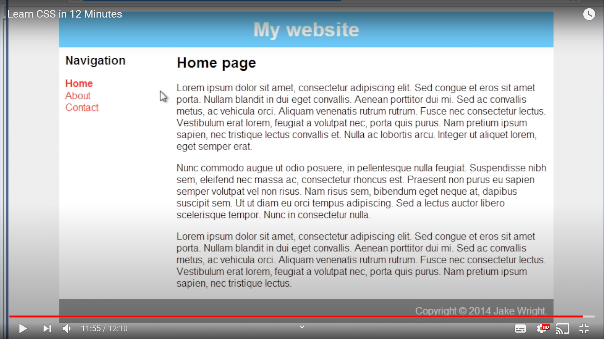
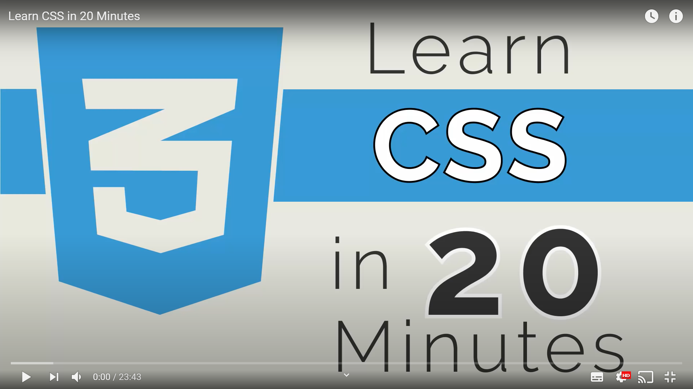
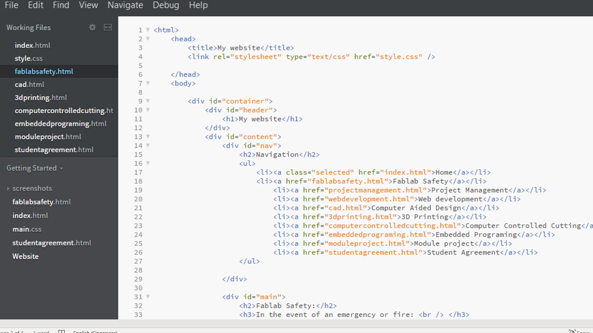
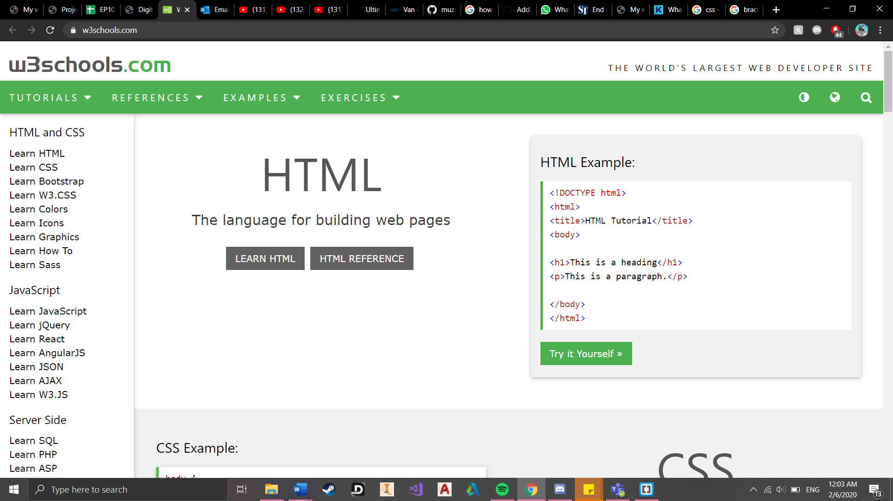

Web Development:
GitHub
What is GitHub? GitHub is a website and cloud-based service that helps web developers like me store and manage our codes, as well as tracking and controlling changes to our code. We start by creating an account before creating a repository. The repository is where we upload our webpage with all the relevant files which it then transforms them into a webpage.
My experiences using it: It was confusing at first so i looked up online about how to use github. That was when i came across GitHub in 20 minutes by Colt Steele. The video was really helpful and taught me a lot of basic the basic steps that i needed. The repositories are however a little hard to work with, so it took me some time to get used to it.
HTML
What is HTML? Hpertext Markup Language (HTML) is the standard markup language for documents designed to be displayed in a web browser. It is the most basic buliding block of a web. It can be assisted by technologies such as CSS which i will talk about later.
My experiences using it: I have not done coding before so I came into this thinking that it would be really hard to manage. It was easier than I had imagined. Watching Learn HTML in 12 Minutes by Jake Wright really helped me learn the basics which helped me create my first simple website. His other video Learn More HTML in 12 Minutes taught me more of the essential tags that I should use which improved on my website. 
CSS
What is CSS? CSS is the language for describing the presentation of web pages, including colors, layouts and fonts. It is what I used for this website.
My experiences with CSS: CSS really changed my website in terms of look and style. Gone was the website that looked like it was from the 1990s. CSS allowed me to change the fonts, colors, even setting up boxes for my various content like navigation and so on. Once again I scoured the internet for videos to help me out and Jake Wright comes to help again. His video Learn CSS in 12 Minutes introduced my on how I could use CSS in a HTML document. I also watched Learn CSS in 20 Minutes by Web Dev Simplified. It was a more in-depth video which taught me a few more advanced techniques which I think really helped me out. 
Brackets
What is Brackets? Brackets is a source code editor with a primary focus on web development. I was introduced to it by my teacher.
My experiences using it: I found it to be much better than using notepad. It had a better interface and I could understand how to use it better. Below is an example of a code that I wrote using brackets. I also used the recommended website called w3schools.com. It teaches you how to use the different kinds of language, in this case HTML and CSS. It really boosted my confidence while using brackets thanks to its many examples. However, I do admit that there where times that I had to google for certain solutions.